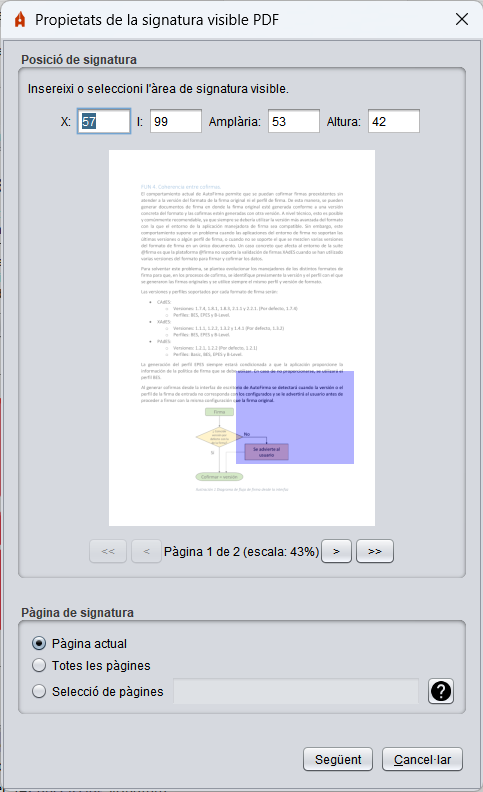
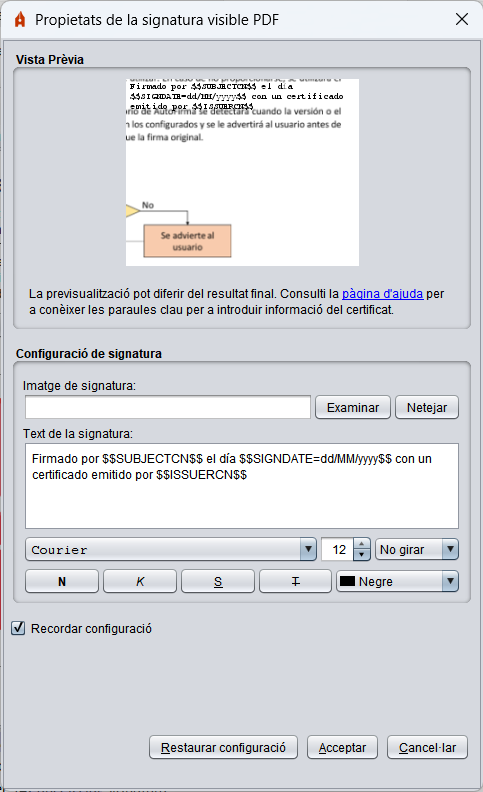
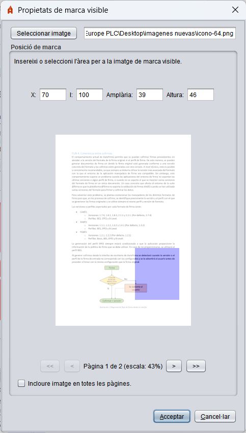

Propietats de les signatures visibles PDF
En habilitar la creació de signatures visibles PDF, es donarà a l'usuari la possibilitat de seleccionar una àrea de signatura sobre el PDF que vagi a signar en format PAdES.

Aquest menú permet utilitzar el ratolí per a seleccionar una àrea rectangular d'una de les pàgines del PDF.
- X: Nombre de píxels en l'eix X en el comença l'àrea de signatura.
- I: Nombre de píxels en l'eix I en el comença l'àrea de signatura.
- Amplària: Nombre de píxels que s'estén en horitzontal l'àrea de signatura.
- Altura: Nombre de píxels que s'estén en vertical l'àrea de signatura.
- (Previsualització de la pàgina del PDF): L'usuari ha de fer clic sostingut i arrossegar el ratolí sobre aquest àrea per a seleccionar l'àrea visible de signatura. Les posicions i la grandària de l'àrea de signatura s'expressa en píxels respecte a l'escala en la qual es mostra la imatge de la pàgina.
- <<: Botó per a desplaçar la visualització a la primera pàgina del PDF.
- <: Botó per a desplaçar la visualització a la pàgina anterior del PDF. Pot reproduir-se aquest comportament prement la tecla "cursor esquerre" del seu teclat.
- >: Botó per a desplaçar la visualització a la següent pàgina del PDF. Pot reproduir-se aquest comportament prement la tecla "cursor dret" del seu teclat. Si ens trobem en l'última pàgina del PDF aquesta opció ens permetrà crear una pàgina en blanc al final del document en la qual es podrà inserir la signatura.
- >>: Botó per a desplaçar la visualització a l'última pàgina del PDF.
En aquesta mateixa finestra, en la part inferior, es permet indicar la pàgina o pàgines on ha d'aparèixer la signatura visible. Les opcions que es permeten són les següents:
- Pàgina actual: La signatura visible apareixerà en la pàgina que s'hagi seleccionat en el selector de posició superior.
- Totes les pàgines: La signatura visible apareixerà en totes les pàgines del document.
- Selecció de pàgines: En aquesta opció es permet seleccionar la pàgina o rang de pàgines on apareixerà la signatura visible. Si es desitja indicar una pàgina o diverses pàgines on estampar la signatura visible, és possible indicant pàgina a pàgina amb una separació de comes (
1,4,7: S'estampa en les pàgines 1, 4 i 7) o indicant un rang de pàgines a través d'un guió (1-8: S'estampa en les pàgines des de la 1 fins a la 8). També es permet indicar les pàgines segons la seva posició des del final del document. Per a això s'utilitzarà la posició amb un valor negatiu (-2: Estamparà la signatura en la penúltima pàgina). Aquests mecanismes es poden combinar. Per exemple:
- 3-6, 8, 10--1: Indica que s'estamparà en les pàgines des de la 3 a la 6, en la 8 i des de la 10 a l'última pàgina.
El botó que conté un signe d'interrogació (?) permet obrir la pàgina d'ajuda per a la signatura visible.
L'àrea de signatura desaparecera en canviar de pantalla del PDF. Seleccioni l'àrea per a la signatura visible del PDF i a continuació, premi el botó Següent.
A continuació, es mostrarà una nova finestra en la qual l'usuari podrà configurar l'aspecte de la signatura.

Aquesta interfície permet configurar les següents propietats per a la signatura visible:
- Vista prèvia. Pot configurar-se el fitxer d'imatge prement sobre la previsualització de la signatura. No es permeten imatges amb transparències.
- Configuració de signatura:
- Imatge de signatura: Ruta de la imatge amb la rúbrica de signatura. Pot seleccionar-se mitjançant el botó Examinar i eliminar-se mitjançant el botó Netejar. No s'admeten transparències en la imatge i s'ometran en cas de trobar-se.
- Text de signatura: Text a mostrar en la signatura del PDF. Per a la configuració del text que es desitja mostrar en la signatura és possible utilitzar una sèrie de paraules clau que seran substituïdes pels textos apropiats del titular o emissor del certificat de signatura en el moment de signar. Aquestes són:
- $$SUBJECTCN$$
- Nom comú (CN, Common Name) dins del X.500 Principal del titular del certificat de signatura.
- $$ISSUERCN$$
- Nom comú (CN, Common Name) dins del X.500 Principal de l'emissor del certificat de signatura.
- $$CERTSERIAL$$
- Número de sèrie del certificat de signatura.
- $$SIGNDATE=PATRÓ$$
- Data de la signatura, on PATRÓ ha d'indicar el format en el qual ha de mostrar-se la data, seguint l'esquema definit per Oracle per a la classe SimpleDateFormat.
- $$GIVENNAME$$
- Nom del titular (G, Given Name) declarat en el certificat. Aquest valor podria no aparèixer en el certificat, i en aquest cas, el patró se substituirà per cadena buida.
- $$SURNAME$$
- Cognoms del titular (SN, Surname) declarat en el certificat. Aquest valor podria no aparèixer en el certificat, i en aquest cas, el patró se substituirà per cadena buida.
- $$ORGANIZATION$$
- Organització (O, Organization) del titular declarada en el certificat. Aquest valor podria no aparèixer en el certificat, i en aquest cas, el patró se substituirà per cadena buida.
- $$PSEUDONYM$$
- Pseudònim del certificat. Aquest valor podria no aparèixer en el certificat, i en aquest cas, el patró se substituirà per cadena buida.
- $$OU$$
- Unitat Organitzativa (OU, Organization Unit) del certificat. Aquest valor podria no aparèixer en el certificat, i en aquest cas, el patró se substituirà per cadena buida.
- $$OUS$$
- Llistat d'Unitats Organitzatives del certificat. En cas que hi hagués més d'una, es presentarien totes separades per ", ". El certificat podria no tenir definides Unitats Organitzatives, i en aquest cas, el patró se substituirà per cadena buida.
- $$TITLE$$
- Informació sobre el lloc o rol del titular del certificat. Aquest valor podria no aparèixer en el certificat, i en aquest cas, el patró se substituirà per cadena buida.
- $$REASON$$
- Raó per la qual se signa el PDF, configurada l'operació de signatura mitjançant la propietat "signatureReason". El patró se substituirà per cadena buida si no s'hagués establert aquest valor.
- $$LOCATION$$
- Ciutat en la qual se signa el PDF, configurada l'operació de signatura mitjançant la propietat "signatureProductionCity". El patró se substituirà per cadena buida si no s'hagués establert aquest valor.
- $$CONTACT$$
- Informació de contacte del signant del PDF, configurada l'operació de signatura mitjançant la propietat "signatureContact". El patró se substituirà per cadena buida si no s'hagués establert aquest valor.
- Al text se li poden aplicar les següents opcions de format:
- Font de lletra.
- Grandària de lletra.
- Rotació del text.
- Estil de font (Negreta, Cursiva, Subratllat o Ratllat).
- Color del text.
La casella "Recordar configuració" permet guardar la configuració establerta (text, imatge i estils) per a utilitzar-la en les següents signatures. El botó "Restaurar configuració per defecte" retornarà la configuració del panell als valors per defecte.
Si no es desitja agregar una signatura visible al PDF, abans de prémer el botó signar en la pantalla de signatura, asseguri's que no es troba seleccionada la casella "Fer la signatura visible dins del PDF".
Propietats de les marques visibles
En habilitar la inserció de marques visibles en el PDF, es donarà a l'usuari la possibilitat de seleccionar una àrea sobre el PDF que vagi a signar.

Aquest menú permet utilitzar el ratolí per a seleccionar una àrea rectangular en una o totes les pàgines del PDF.
- Seleccionar imatge: En prémer aquest botó s'obrirà una finestra en la qual podrà seleccionar la imatge de marca. No s'admeten transparències en la imatge i s'ometran en cas de trobar-se
- X: Nombre de píxels en l'eix X en el qual situar la marca.
- I: Nombre de píxels en l'eix I en el qual situar la marca.
- Amplària: Nombre de píxels que s'ha d'estendre en horitzontal la marca.
- Altura: Nombre de píxels que s'ha d'estendre en vertical la marca.
- (Previsualització de la pàgina del PDF): L'usuari ha de fer clic sostingut i arrossegar el ratolí sobre aquest àrea per a seleccionar l'àrea en el qual es col·locarà la marca.
- <<: Botó per a desplaçar la visualització a la primera pàgina del PDF.
- <: Botó per a desplaçar la visualització a la pàgina anterior del PDF. Pot reproduir-se aquest comportament prement la tecla "cursor esquerre" del seu teclat.
- >: Botó per a desplaçar la visualització a la següent pàgina del PDF. Pot reproduir-se aquest comportament prement la tecla "cursor dret" del seu teclat.
- >>: Botó per a desplaçar la visualització a l'última pàgina del PDF.
- Incloure imatge en totes les pàgines: Casella per a seleccionar que la marca s'insereixi en totes les pàgines del PDF.
L'àrea de marca desaparecera en canviar de pàgina del PDF. Seleccioni la pàgina, imatge i àrea per a la marca visible en el PDF i a continuació, premi el botó Acceptar.
Si no es desitja agregar una marca visible al PDF, abans de prémer el botó signar en la pantalla de signatura, asseguri's que no es troba seleccionada la casella "Inserir una marca visible dins del PDF".